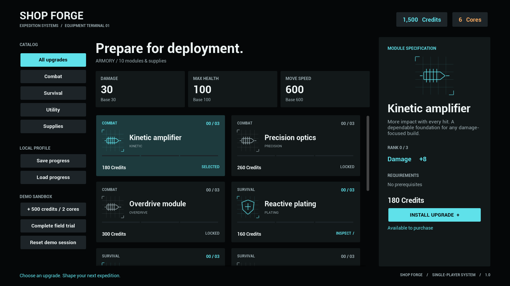
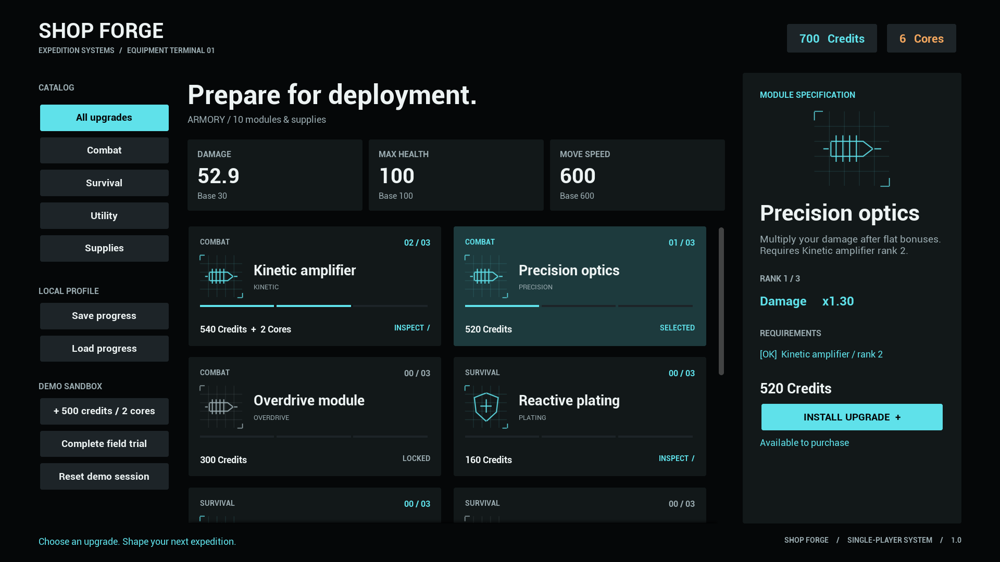
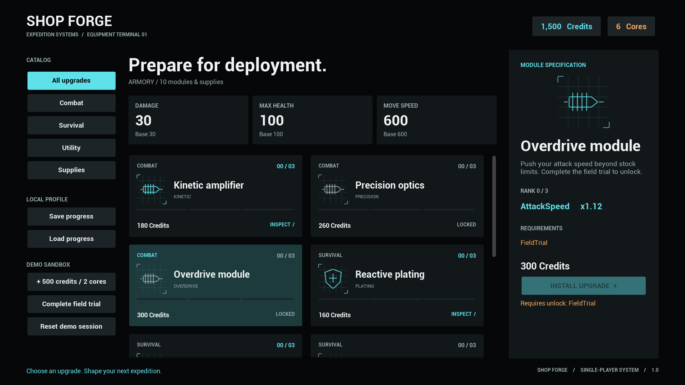

Unreal Engine 5.8 plugin · Documentation
Shop Forge
Shops and upgrades for your game's progression. Define the catalog, connect your gameplay, and let players build their loadout.
- UE 5.8 · Win64
- C++ source
- Blueprint API
- Local saves


Overview
Shop Forge handles the economy behind an in-game upgrade shop: currency balances, rank prerequisites, purchases, consumable stacks and saved progress. The runtime component is independent of your character, inventory UI and game mode.
The included Expedition Armory is a working example with eight upgrade tracks, three ranks per track and two supplies. Its native Slate interface is hosted in a UMG widget. All C++ source is included.




Install
- Copy
ShopForgeintoYourProject/Plugins/ShopForge, or install through Fab once available. - For a source installation, regenerate project files and build with the Unreal C++ toolchain. Enable Shop Forge and restart.
- Enable Show Plugin Content in the Content Browser. Open
/ShopForge/Maps/L_ShopForgeand press Play.
The example map has its own GameMode override. A complete ShopForgeDemo project is included in the delivery.
Five-minute tour
- Select Kinetic amplifier and install rank 1: Credits change from 1,500 to 1,320; Damage changes from 30 to 38.
- Install rank 2. Damage becomes 46. Precision optics is now available; buying it raises Damage to 52.9.
- Select Overdrive module. It requires FieldTrial. Use Complete field trial in the demo controls to unlock it.
- Open Supplies, buy a Field medkit and use one. Inventory decreases; your game can bind the consumption event to healing.
- Save progress, make another purchase, then Load progress. The saved wallet, ranks, items and flags return.
Each launch starts a fresh demo session. Load restores a saved profile. Demo reward and reset controls are off by default in widgets you create.
Connect your game
- Add Shop Forge Component to the PlayerController or another actor that owns player progression.
- Create a Data Asset of class ShopForgeCatalog, or duplicate
DA_Expedition. Set a stable CatalogId, currencies and offers. - Call Initialize Catalog; check the return value and error. A successful initialization starts an empty wallet.
- Use Credit for starting funds and gameplay rewards.
- Create ShopForgeWidget, call Set Shop, then Add to Viewport. Set your controller's UI input mode and mouse cursor.
- Bind OnChanged to refresh your HUD and derived attributes. Use
EvaluateStat(MoveSpeed, 600)for your movement speed, orEvaluateStat(Damage, WeaponBaseDamage)for damage. - Bind OnPurchased for purchase feedback and OnConsumed for healing, energy or item effects.
- Save at a checkpoint, or include Export Progress in your own save object. Initialize a matching catalog before loading.
Always evaluate from the original base stat, never an already modified value. Components do not survive level travel automatically; transfer a snapshot through your GameInstance or load after travel.
Catalog and ranks
Currency and offer IDs are unique nonempty names. Each offer has display text, a category, a type and a rank array. Array index 0 is rank 1. A price can use several currencies; an empty price is free. Prices are nonnegative integers.
Upgrade effects
Each rank describes its total active bonus and replaces the previous rank. Across owned upgrades, stats evaluate as (Base + sum(Add)) × product(Multiply). Use Multiply = 1 for no multiplier. Stat names are keys interpreted by your game.
Dependencies
A rank can require other upgrade ranks and named flags. Invalid dependencies and cycles are rejected. Flags are checked at purchase time: clearing one later does not remove an acquired upgrade.
Supplies
Items use one repeatable price rank and a positive stack limit. A purchase adds one unit. Consume Item deducts the requested positive quantity and emits OnConsumed. Items do not apply passive stat modifiers.
Blueprint API
| Function | Purpose |
|---|---|
| Initialize Catalog | Validate and copy the data; reset progress on success |
| Quote / Purchase | Inspect eligibility and costs; purchase one rank or item |
| Credit | Add a positive currency reward with overflow protection |
| Consume Item | Remove owned units and dispatch the consumption event |
| Set Flag / Has Flag | Control quest or progression gates |
| Get Balance / Get Rank / Get Item Count | Read current progress |
| Evaluate Stat | Apply owned modifiers to a supplied base value |
| Export / Import Progress | Integrate with your own save system |
| Save / Load Profile | Use a local SaveGame slot |
| Set Shop / Select Offer | Bind the included widget and open a particular offer |
Purchase checks all requirements before changing any balance. Events run after the state is committed. Mutations requested from inside these events are rejected; queue chained purchases or rewards for a later tick.
Saving and compatibility
Snapshots contain Version, CatalogId, wallet, ranks, inventory and flags. Import validates the entire snapshot before replacing the current state. Failed imports preserve progress.
New currencies start at zero; new offers can be added. Renaming IDs, removing currencies or offers, reducing limits or changing prerequisites can require a migration before Import Progress. Keep the catalog ID stable only when compatibility is intentional.
Save Profile and Load Profile are synchronous local operations. Saves are editable by the player. This release does not provide cloud persistence or an online economy.
Interface customization
The supplied screen uses a fixed 1560 × 900 layout scaled to the viewport, with scrolling catalogs and a module inspector. It targets desktop mouse input. The diagrams are drawn procedurally; no external icon pack is required.
Use Set Shop, Select Offer, SaveSlot and bShowDemoControls from Blueprint. Change typography, colors and layout in ShopForgeWidget.cpp, or build a UMG screen around Quote and OnChanged. An editable Widget Blueprint layout is not included.
Display strings use FText where appropriate. Categories and some diagnostic strings remain identifiers; complete a localization pass for your shipping languages.
Release scope
| Engine / platform | Unreal Engine 5.8 · Windows 64-bit |
|---|---|
| Module | ShopForge · Runtime · C++ with Blueprint API |
| Content | One overview map, one editable catalog, eight upgrade tracks and two supplies |
| Dependencies | Engine, UMG and Slate. No third-party runtime plugin |
| Networking | Local single-player. No replication or server authority |
| Not included | Real-money payments, selling/refunds, respec, stock rotation, discount rules, combat or character movement implementations |
The sample evaluates stats and emits events. Your game applies their gameplay effects. Controller, touch, console and other engine versions are not advertised as tested.
Changelog
1.0.0
Initial release: catalog-driven shops, ranked upgrades, multiple currencies, prerequisite ranks and flags, stackable supplies, local saves, Blueprint integration and the Expedition Armory example.
Support
Shop Forge by Timur Sibatov.
Questions and bug reports: timatisib@gmail.com.
Include your engine version, Shop Forge version, steps to reproduce and the relevant log or screenshot. For catalog problems, include the offer IDs and their dependencies.